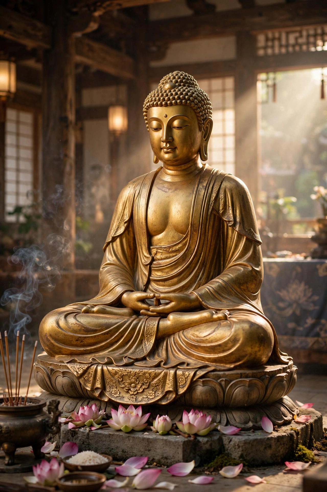

 The Buddha, embodiment of awakening | |
| Sanskrit | बुद्धत्व (buddhatva) |
|---|---|
| Pali | buddhatta / buddhabhāva |
| Chinese | 佛果 / 成佛 |
| Japanese | 仏果 / 成仏 |
| Tibetan | sangs rgyas |
In Buddhism, Buddhahood is the condition and status of a fully awakened being — one who has completely overcome greed, hatred, and delusion, realized the true nature of reality, and attained liberation from the cycle of rebirth (samsara). The title Buddha means "the awakened one" and is most famously borne by Siddhartha Gautama, the founder of Buddhism.
Buddhist texts attribute to a Buddha a set of extraordinary qualities, including the ten powers (daśabala), the four fearlessnesses, and unobstructed knowledge of past lives, the workings of karma, and the path to liberation. In early Buddhism, the Buddha is distinguished from other liberated beings (arhats and pratyekabuddhas) by having discovered the path independently and by teaching it to the world.
In Mahayana Buddhism, which developed the ideal of the bodhisattva, Buddhahood is the ultimate goal of all beings. The bodhisattva undertakes a long path — traditionally spanning countless aeons — cultivating the six perfections (pāramitā): generosity, morality, patience, effort, meditation, and wisdom, grounded in compassion (karuṇā) and the aspiration to awakening (bodhicitta).
Mahayana doctrine holds that all beings possess Buddha-nature (tathāgatagarbha), the inherent potential for awakening. The doctrine of the trikāya describes a Buddha as manifesting three bodies: the dharma-body, the bliss body, and the emanation body.
Buddhist cosmology recognizes many Buddhas across time and world-systems. Buddhas of the past, such as Dipankara and the seven Buddhas of antiquity, preceded Gautama; Maitreya is prophesied as the Buddha of the future. In Mahayana and Vajrayana traditions, celestial Buddhas such as Amitabha and Vairocana are objects of devotion and practice.